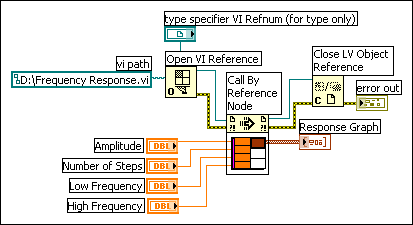

You can dynamically load VIs instead of using statically linked subVI calls. A statically linked subVI is one you place directly on the block diagram of a caller VI. It loads at the same time the caller VI loads.
Unlike statically linked subVIs, dynamically loaded VIs do not load until the caller VI loads them with the Open VI Reference. If you have a large caller VI, you can save load time and memory by dynamically loading the VI because the VI does not load until the caller VI needs it, and you can release it from memory after the operation completes. You also can use the VI Call Configuration dialog box to configure when to load the subVI.
Use the Call By Reference node or the Start Asynchronous Call node to dynamically call VIs. Both nodes begin a call to the subVI specified by their reference input. However, the Start Asynchronous Call node calls the subVI asynchronously while data flow continues in the calling VI.
The Call By Reference node requires a strictly typed VI refnum. The strictly typed VI reference identifies both the VI you are calling and its connector pane. It does not create a permanent association to the VI or contain other VI information, such as the name and location. You can wire the Call By Reference node inputs and outputs just like you wire any other VI.
The following block diagram shows how to use the Call By Reference node to dynamically call the Frequency Response VI. The Call By Reference node requires the use of the Open VI Reference and Close Reference functions, similar to the functions you use for the Property Node and the Invoke Node.

The VI you specify for strictly typed refnums provides only the connector pane information. That is, no permanent association is made between the refnum and the VI. In particular, avoid confusing selecting the VI connector pane with getting a refnum to the selected VI. You specify a particular VI using the vi path input on the Open VI Reference function.